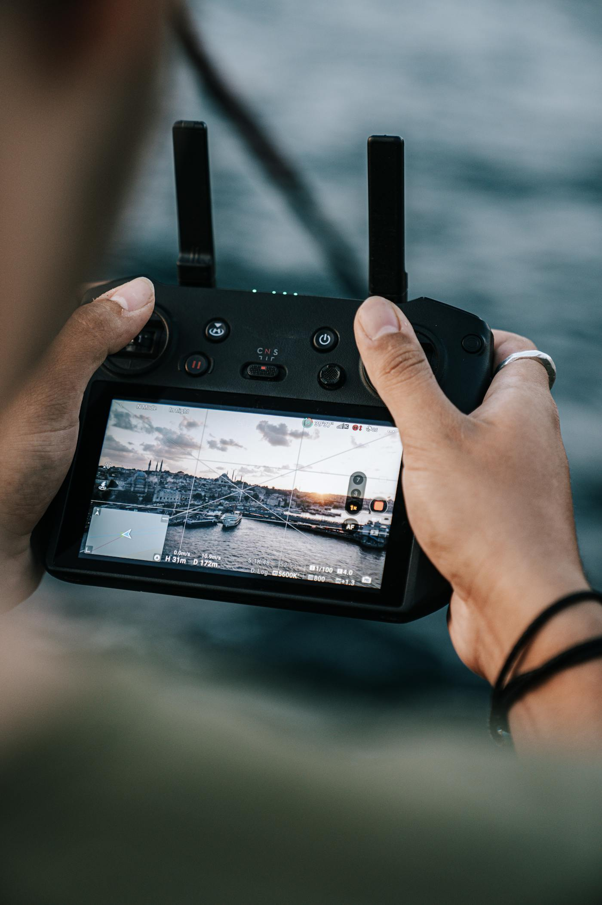

About Kaptsure
Local drone services with property experience behind the camera.
Kaptsure is a professional drone services company serving the Mississippi Gulf Coast, including Gautier, Ocean Springs, Pascagoula, Biloxi, Gulfport, and surrounding areas.

Built for inspections, documentation, and confident decisions.
Kaptsure is not just a drone photography company. It provides aerial inspections, real estate media, insurance documentation, and property imaging for contractors, agents, adjusters, homeowners, and property owners.
The work is practical: reduce climbing risk, capture hard-to-see details, document current conditions, and deliver clean visuals that help move a project, claim, listing, or property evaluation forward.